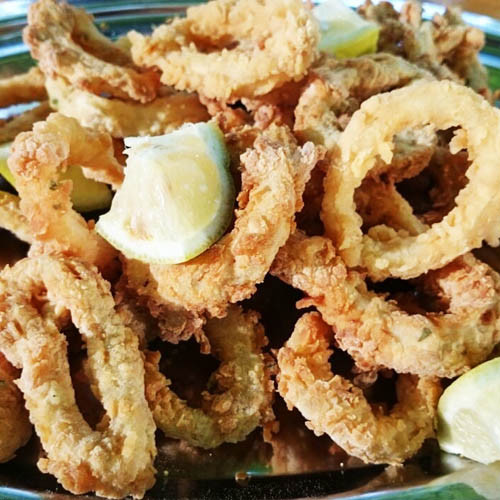
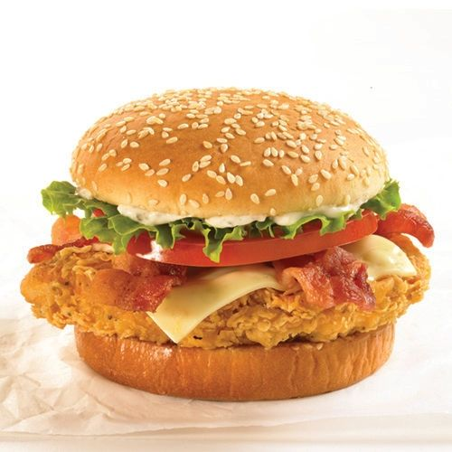
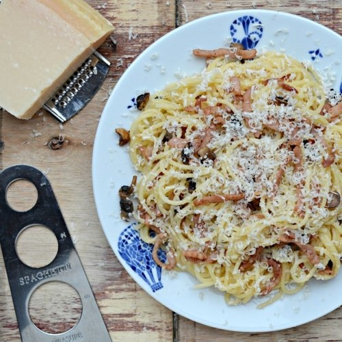
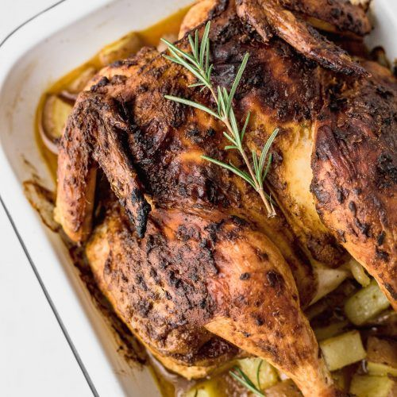
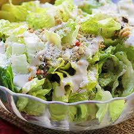

Esta receta de patatas al horno asadas son la guarnición ideal para platos de carne y pescado pero incluso también las he servido muchas veces como aperitivo acompañadas de salsas caseras como la salsa brava o un buen alioli casero porque están riquísimas, se cocinan en poco tiempo y además el horno se encarga de todo. Conseguiréis unas patatas tiernas por dentro y ligeramente doradas por fuera, además aliñadas con las especias y hierbas que prefiráis aunque abajo veréis cuáles suelo utilizar yo.
Si te gusta preparar patatas de todas las formas posibles, no te pierdas la técnica de las patatas al microondas, una vez que la pruebas ya no puedes parar de preparar patatas así. También hay clásicos como las patatas panaderas al horno, la receta más fácil y con mejor resultado, las patatas a lo pobre, el puré de patatas casero, las tradicionales patatas fritas perfectas: tiernas por dentro y crujientes por fuera o las patatas fritas al ajillo. Si buscas una receta llena de tradición anímate a preparar las patatas revolconas, meneás, machaconas o revueltas o las resultonas patatas duquesa.
Y disfruta con los increíbles resultados que ofrece el horno preparando patatas al horno gratinadas o tartiflette o las famosas patatas deluxe o patatas gajo asadas al horno, con ...leer artículo
Calamares Rebosados
Por Manuel Blanco |

Sabrosos Calamares
Es el caso de estos calamares a la romana o calamares rebozados, un aperitivo que se suele pedir cuando salimos a tapear pero que caseros no suponen mucho esfuerzo (limpiar los calamares requiere algo de paciencia aunque siempre podemos utilizar anillas) y quedan riquísimos. Hablo de aperitivo porque los suelo comer de esa forma pero no olvidemos que son los protagonistas del bocadillo más típico y famoso de Madrid y también de muchos otros lugares, el bocadillo de calamares. A mi me gusta cuando lo sirven con mayonesa y además me encanta echarle unas gotitas de zumo de limón.
Como siempre, en la receta encontraréis todos los detalles para conseguir el mejor resultado empezando por la limpieza de los calamares, la elaboración de un rebozado adecuado y con cuerpo y acabando con los trucos para conseguir una fritura perfecta, anda aceitosa y crujiente.
Si te gustan los aperitivos con pescado te recomiendo preparar los tradicionales buñuelos de bacalao esponjosos y crujientes por fuera o el cazón en adobo o bienmesabe. También está riquísima la clásica empanada gallega de bonito y pimientos con masa de empanada casera, el bacalao al ajoarriero o atascaburras, el pastel de cabracho asturiano, los pimientos del piquillo rellenos de bacalao, la brandada de bacalao con salsa verde o los boquerones en vinagre. Si nos apetece un aperitivo con pescado con un toque original te recomiendo el tartar de atún rojo y aguacate o el tartar de salmón ahuma ...leer artículo
Hamburguesa de Pollo
Por Manuel Blanco |

Sabrosa Hamburguesa
Cómo un caramelo guardado en un bolsillo que nos alegran la tarde. O esa hermosura que es encontrar plata en la ropa guardada cuando cambia la temporada.Son como pequeños regalitos que nos hacemos nosotros mismos desde el pasado.Éstas hamburguesas de pollo son uno de esos regalitos que no veníamos venir, y de repente, click! mirá como te cambiaron el día, el verano…..y por qué no, la vida!
Éste es uno de esos platos que se inventaron un día y se olvidaron para siempre, quedaron ahí en un cajón. Un tesoro esperando ser reencontrado por los piratas de los canales de cocina.El tiempo ha llegado de restituir la gloria de las hamburguesas de pollo, que tanto le da a la comunidad: ricas, prácticas, creativas!
En lo que es materia de “cosas que se pueden hacer a la parrilla y le gustan a todos”, estas hamburguesas son una estrella. Los chicos las adoran, las abuelas las aclaman, los primos las piden por Twitter.
Si leyeron todo esto y pensaron “que buena idea para una cena, nunca se me ocurre qué hacer” hagan click acá y entren al curso de cocina online de Paulina Cocina “La cena en 30 mi ...leer artículo
Pasta Carbonara
Por Manuel Blanco |

Pasta Carbonara Tradicional
Esta receta la vamos a preparar para 3 o 4 comensales, y te la detallamos tal y como la preparamos nosotros en casa. La salsa carbonara que preparamos aquí es la más completa que nosotros solemos hacer, ya que le añadimos cebolla, panceta, champiñones y nata, que es una combinación de sabores muy sabrosa. Si prefieres otra salsa carbonara diferente a la que te describimos, puedes usar otra de las que encontrarás en la web, o emplear una que te guste a ti. En cuanto a la pasta elegida, nosotros empleamos espagueti, pero puedes usar macarrones o cualquier otra que sea de tu agrado.
La preparación de este plato no te va a suponer ninguna dificultad, además te detallamos la misma paso a paso para que te animes a prepararla en casa. Vamos ya con la receta detallada. Antes de nada vamos a lavar bien los frescos, para quitarles toda la suciedad que pudieran tener. Si no son laminados, córtalos en láminas no demasiado gruesas. Al acabar, pela la cebolla y córtala en dados pequeños. Y por último coge la panceta o el bacon que tengas y córtala en tiras de un centímetro más o menos de gro ...leer artículo
Pollo Horneado
Por Manuel Blanco |

Jugoso y suave pollo horneado
Uno de esos platos que podríamos decir que forman parte de la cultura gastronómica mundial. Ya que en casi todas las sociedades existe una receta de pollo asado. Ya sea con unas salsas u otras, con piel o sin ella, con hierbas varias, especias, vegetales, cítricos, licores o no… esta receta de pollo al horno está dentro de la gastronomía global como uno de sus platos por excelencia.
Ya sabéis, esos en los que el pollo es atravesado por un hierro que lo hace girar, permitiendo así que sus jugos y su grasa se vayan extendiendo por toda la pieza. Pero en casa lo más habitual es que utilicemos el horno para asarlo, dejando el pollo en una bandeja y sometiéndolo a la fuente de calor durante un tiempo determinado.
En el blog tenéis alguna receta más con pollo al horno, aunque no entero como en este caso, desde los tradicionales muslos de pollo, en este caso al limón o con una de mis partes favoritas, las famosas alitas al horno con salsa barbacoa.
Si os sobra podéis hacer unas deliciosas croquetas de pollo, las que tenemos con los restos de este pollo asado, una sopa de picadillo de pollo o un relleno para una lasaña de pollo increíble.
El resultado con el pollo entero es excepcional, si os pasa como a mí os será difícil dejar de disfrutar de esta receta, os aseguro que está de rechupe ...leer artículo
Ensalada Cesar
Por Manuel Blanco |

Riquisima ensalada Cesar
Muchos son los aficionados a disfrutar de esta ensalada clásica, la ensalada César, pero no todos conocen la receta auténtica de esta ensalada de origen mexicano. Al igual que ocurre con la auténtica salsa carbonara hecha con huevos y queso pecorino, que no lleva nata entre sus ingredientes, hoy os vamos a enseñar cómo hacer Ensalada César, la receta auténtica que no lleva ni pollo, ni anchoas, ni se hace con mezcla de distintas variedades de lechuga, sino con hojas de lechuga romana, cargadas con el aderezo.
La receta original fue elaborada en el Hotel Caesar’s por el chef del restaurante Cardini, Remigio Murgia, aunque el plato se denominó inicialmente ensalada de los aviadores ya que se hizo para ellos, cuando iban a Tijuana a buscar alcohol durante la prohibición o Ley Seca en Estados Unidos. Después Cesare Cardini registro la salsa con el nombre de Cardini´s Original Caesar Dressing Mix y se empezó a denominar como Ensalada Cesar en honor al cocinero César Cardini, dueño del restaurante.
Posteriormente ante el éxito de la receta en México y los Estados Unidos de América, la receta llegó a Europa, de la mano de los duques de Windsor, adaptándose hasta los tiempos actuales en los que la receta moderna de esta ensalada se elabora con pollo, anchoas, mezcla de lechugas y se presenta de otra manera. En unos días os enseñaremos esa otra versión moderna con pollo de la receta de Ensal ...leer artículo